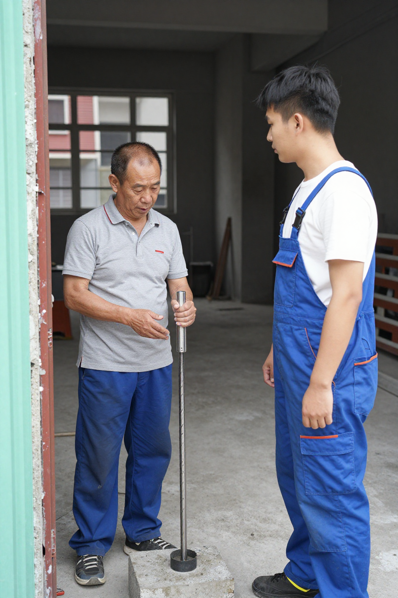
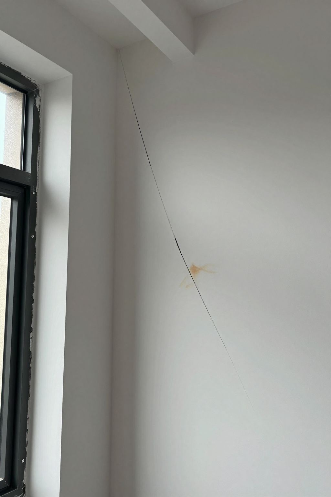

東涌公屋混凝土檢查之後：阿強師傅同阿杰講解結構、裂縫與全屋定制嘅底線

📍 場景：東涌第42區公屋｜主講：張丹楓（8年全屋定制）｜設計整理：雲蕾｜師傅：阿強（25年經驗）｜學徒：阿杰｜熱點：2026年9月12日明報、9月13日星島、結構工程師倪學仁
序幕：今日下午下，東涌公屋樓下
今日下午下，我同張丹楓企喺東涌一個公屋地盤樓下，望住房屋署嘅檢測車停喺路邊。張丹楓帶咗三年嘅徒弟阿杰湊過嚟問：「師傅，頭先新聞話東涌第42區公屋第3座、第4座同第5座，有部分結構構件嘅混凝土質素要進一步審視同測試，係咪嗰座樓有問題？」
我——點支煙，吸一口口，說：「阿杰，你睇新聞淨係睇標題。其實每一棟新樓都要抽檢測，尤其公屋，房委會一直好嚴。但有時趕工，可能會有細節疏忽。」阿杰撓頭：「咁我哋做裝修嘅，遇到呢種情況點算？」
張丹楓指住樓上嘅單位：「舊年我接咗一個翻新工程，業主買咗二手公屋，我哋敲開牆身，發現石屎有空鼓。嗰陣業主嚇到面青，以為成棟樓要冧。」阿杰問：「咁點處理？」
第一幕：空鼓實錄，先影相後聯絡房委會
「先拍照記錄，然後聯絡房委會。佢哋派工程師嚟睇，最後確認係局部施工問題，唔影響結構安全。我哋配合做修補，用高強水泥砂漿填補，再重新批盪。業主後來仲請我飲茶，話多得我哋發現得早。」
「嘩，原來裝修師傅唔只係做表面功夫，仲要識結構。」
「對，香港地方細，樓又密，每一寸空間都要用好。但安全永遠係第一位。我入行二十五年，見過太多趕工出問題嘅例子。例如天花板嘅石屎，如果澆築唔密實，日後鑽孔裝燈就會掉渣，甚至成塊剝落。」

第二幕：阿杰三招，業主都學到
呢時樓上傳嚟電鑽聲。我抬頭睇，係另一隊裝修工人開緊工。阿杰問：「師傅，佢哋咁樣鑽，會唔會影響結構？」我答：「睇情況。如果係承重牆，絕對唔可以亂鑽。但如果係非承重間隔牆，只要避開鋼筋位置，一般冇問題。不過而家好多後生仔裝修，喜歡打拆，把所有牆都敲掉，重新隔。咁做雖然空間變大咗，但牆體厚度變薄，隔音同隔熱都會差。」
我哋行入電梯。到咗目標單位，門一開，入面一片凌亂。業主张先生迎上嚟：「陳師傅，你睇下呢面牆，上次颱風後有條裂縫。」張丹楓走近觀察，裂縫從窗角斜向延伸。
「會唔會係樓體結構問題？」
「張先生，唔使慌。呢種裂縫好常見，通常係熱脹冷縮或輕微沉降造成。你睇，裂縫邊度闊度唔到0.3mm，唔影響安全。但為咗美觀同防滲水，我哋可以用環氧樹脂灌縫，再重新批盪。」

第三幕：全屋定制，唔係裝櫃咁简单
「咁費用呢？」
「材料加人工，大概三千元。但如果裂縫繼續擴大，就要請結構工程師檢查。」
「陳師傅，聽講而家流行『全屋定制』，你哋做唔做？」
「做，但全屋定制唔係簡單裝櫃子。要先量好尺寸，考慮通風、採光、動線。呢間屋窗戶朝北，光線較暗，櫃子就唔做得太高，否則會擋光。另外，香港人收納需求大，但空間細，所以櫃內設計要靈活，用抽屜、層板、掛鈎組合。」
「師傅，我聽講新盤用咗好多新型建材，我哋傳統裝修會唔會被淘汰？」
「唔會。新材料有好處，但經驗更重要。例如而家流行嘅『無把手櫃門』，用反彈器開合，看似簡潔。但反彈器容易壞，香港潮濕，金屬部件生鏽後就打唔開。所以我會建議客戶用緩衝鉸鏈，雖然貴少少，但耐用。」
尾聲：師傅嘅兩句底線
張先生嘅太太端上茶水。我哋坐低休息，傾起最近樓市。張先生話：「我買呢間公屋花咗四百萬，裝修預算只有二十萬，夠唔夠？」我計一計：「基礎翻新，包括水電、批盪、油漆、地板，大概十五萬。如果做定制櫃，五萬到八萬。但要注意，香港裝修人工贵，一個技工一日要八百到一千元。所以預算要緊。」
張先生點頭：「咁就先做基礎翻新，櫃子以後再加。」我企起身檢查牆面，用空鼓錘輕輕敲擊。叮叮聲中，發現幾處空鼓。我對張先生話：「呢度要打掉重做，否則日後油漆會剝落。材料用『立邦』或『多樂士』嘅防霉膩子，適合香港氣候。」
「師傅，點解唔用國產膩子？平一半。」
「阿杰，裝修質素關係安全。國產膩子有啲含甲醛超標，香港天氣熱，甲醛釋放更快，影響健康。我哋做嘅係良心生意，唔可以貪平。」
張先生贊同：「陳師傅講得啱，健康最重要。」
下晝四點，我哋結束勘察。離開時，我見到樓下檢測車仲喺度。阿杰問：「師傅，你覺得公屋混凝土真係有問題嗎？」我搖頭：「唔知。但專業嘅事交畀專業嘅人。我哋裝修師傅，做好自己本分，確保施工安全，對得起客戶就得。」
返到公司，我整理今日嘅記錄，畀阿杰寫工程報價單。佢寫得好認真，但漏咗防水層項目。我指出：「阿杰，香港雨水多，窗邊、廚房、廁所一定要做防水。唔然滲水到樓下，賠償麻煩。」佢修改後，我審核簽字。
「師傅，你每日咁忙，唔攰咩？」
「攰，但值得。裝修係手藝人，每一間屋都係一個家。我哋做得好，客戶住得安心，呢個就係價值。」
窗外，夕陽照喺東涌嘅樓群上。我諗起入行第一日，師傅講嘅話：「裝修無小事，安全第一位。」二十五年過去，呢句話我日日提醒自己，也教畀阿杰。明日，新工程開始。又是忙碌的一天，但見到客戶滿意嘅笑容，一切都值得。
註：本文基於2026年9月12日明報、9月13日星島、結構工程師倪學仁訪問內容，以裝修師傅視角講述行業經驗同責任。東涌第42區公屋項目承建商為安保工程有限公司，房委會已要求更換混凝土供應商並做補救測試。
| 項目 | 規格 | 價錢 |
|---|---|---|
| 牆身空鼓修補+批盪 | 高強水泥砂漿+重新批盪 | $5,000 |
| 窗角裂縫環氧灌縫 | 0.3mm內+重新批盪 | $3,000 |
| 窗邊廚房廁所防水層 | JS防水+防霉膩子 | $8,000 |
| 全屋定制示範（客廳+廚房+房） | 反彈器+緩衝鉸鏈 | $60,000 |
| 總計 | $76,000 |
❓ 公屋裝修安全五問
Q1：東涌第42區公屋混凝土異常，我住嘅公屋會唔會都有問題？
唔一定。房委會已通知其他工程團隊做同類排查，暫時未喺其他地盤發現同類問題。住戶可以留意房屋署公布，有問題會有進一步跟進。
Q3：窗角0.3mm斜裂縫要唔要請結構工程師？
裂縫闊度少過0.3mm、屬熱脹冷縮或輕微沉降，可以用環氧樹脂灌縫加重新批盪。但如果裂縫繼續擴大、闊度增加、或者係水平走向，就要請結構工程師檢查。
Q4：公屋裝修20萬夠唔夠？
基礎翻新（防水、水電、批盪、地板）大約15萬，定制櫃額外5-8萬。香港技工日薪800-1000元，要預留工時、唔好貪平，要認清楚邊啲係底線（例如防水層同結構修補唔可以慳）。
Q5：無把手櫃門係咪一定好？
唔一定。無把手設計用反彈器開合，看似簡潔，但香港潮濕，金屬部件生鏽後容易打唔開。建議用緩衝鉸鏈，貴少少但耐用，唔會因為兩年後門冧要整。
Q6：國產膩子可以代替立邦/多樂士嗎？
唔建議貪平。國產膩子有啲含甲醛超標，香港熱天釋放更快。防霉膩子要揀有香港綠色標籤嘅，釋放量低於國際標準。裝修係良心生意，健康先係第一位。
提示：圖片為 SiliconFlow Z-Image-Turbo AI 生成的場景示意圖，不是實際住戶單位。價錢為2026年9月故事報價，實際以度尺為準。